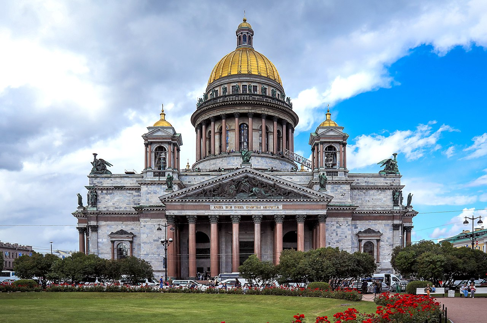

Санкт-Петербург
Экономика
Санкт-Петербург занимает 4-е место среди регионов России по объему валового регионального продукта (ВРП) и является одним из главных экономических центров страны.
Основные показатели
- Место в Росии: 4-е по масштабу экономики.
- Доля в ВВП: Около 3,76 %.
- Инвестиции: Объем инвестиций в основной капитал превышает 635 млрд рублей за полугодие.
- Доходы: Среднемесячный доход горожан достиг 130,4 тыс. рублей (реальный рост зарплат составляет более 5 %)
 Экономика Санкт-Петербурга
Экономика Санкт-Петербурга
Культура
Санкт-Петербург — главная культурная столица России, чей исторический центр входит в список Всемирного наследия ЮНЕСКО.
Главные черты культуры города
- Архитектура: Город славится величественными ансамблями в стилях барокко, классицизма и модерна, дворцами, каналами и разводными мостами.
- Музеи: В Петербурге работает более 200 музеев, включая всемирно известный Государственный Эрмитаж и Русский музей.
- Театры и музыка: Действует около 80 театров, среди которых легендарный Мариинский театр, Александринский театр и Михайловский театр. Город также является колыбелью русского балета и русского рока (легендарный Ленинградский рок-клуб).
- Литература: Петербург вдохновлял Пушкина, Достоевского, Гоголя, Ахматову и Бродского, сформировав уникальный образ «петербургского текста» в литературе.

Культура Санкт-Петербурга
Туризм
Санкт-Петербург — культурная столица России и главный туристический центр страны, привлекающий богатой историей, архитектурой и уникальной атмосферой.
Главные особенности туризма в СПб
- Культурное наследие: Город основан Петром I в 1703 году, здесь сохранились ансамбли XVIII–XIX веков.
- Популярные места: Эрмитаж, Невский проспект, Исаакиевский собор, Петропавловская крепость и Спас на Крови.
- Сезонность: Пик туризма приходится на лето — время белых ночей и разводных мостов, а также на период навигации по рекам и каналам.
- Пригороды: Всемирно известные музеи-заповедники (Петергоф, Пушкин, Павловск) находятся в черте городской агломерации.
.jfif) Туризм Санкт-Петербурга
Туризм Санкт-Петербурга